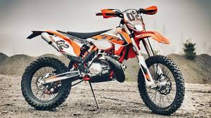
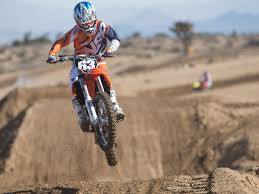

Mam na imię Marek Kowalski. Mam 15 lat. Urodziłem się 28 lutego. Mam 7 rodzeństwa. Uczę się jeszcze w szkole i nie narzekam na moje oceny i zachowanie.
Teraz trochę o moich zainteresowaniach KOCHAM MOTORYZACJE a szczególnie crossy pod enduro. |
 |
 |
Nie wyobrażam sobie życia bez crossa. Mam w domu jednego crossa. Jest to cross marki KTM.Pojemność silnika to 250cm/2 Gdy wsiadam na niego zapominam o problemach |
 |